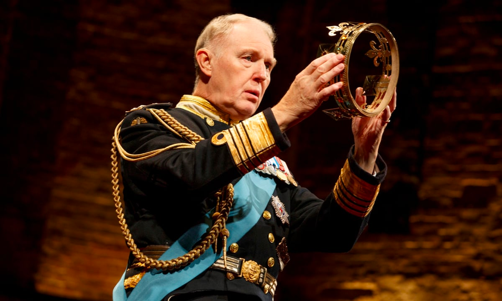

Home
Explore
Notifications
Messages
Bookmarks
Lists
Profile
Tuit
Reply
For you
Trending
News
Sports
Entertainment

The Coronation of Charles III
...
Trending in News
Meghan
56.1K Tweets
...
Trending
Starlink
26.4K Tweets
...
Trending in Business personalities
Warren Buffett
5,502 Tweets
...
Trending in Political figures
Poland
29.9K Tweets
...
Celebrities·Trending
Denzel Washington
1,215 Tweets